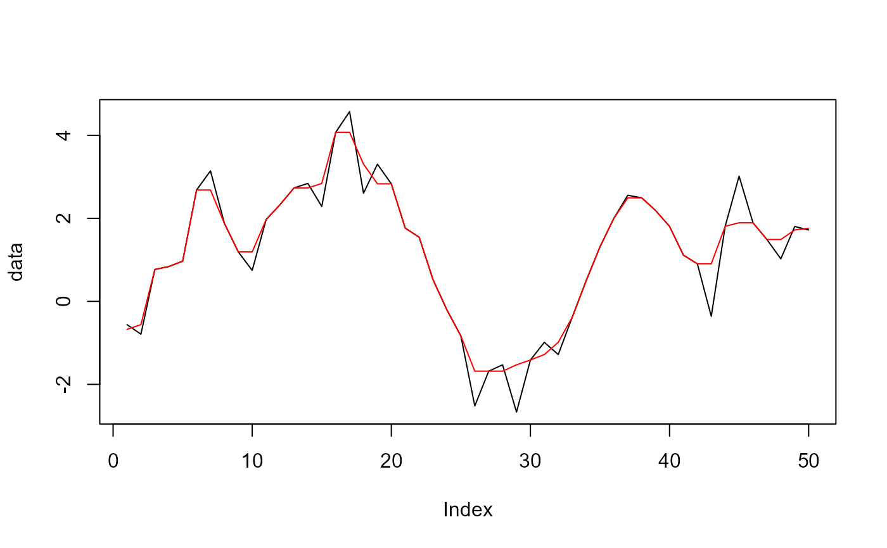

The running_quantile function calculates the quantile of
a vector over a sliding window, allowing for various alignment and rule options.
Usage
running_quantile(
.x,
.window,
.probs = 0.5,
.type = 7,
.rule = "quantile",
.align = "center"
)Arguments
- .x
A numeric vector for which the running quantile is to be calculated.
- .window
An integer specifying the size of the sliding window.
- .probs
A numeric value between 0 and 1 indicating the desired quantile probability (default is 0.50).
- .type
An integer from 1 to 9 specifying the quantile algorithm type (default is 7).
- .rule
A character string indicating the rule to apply at the edges of the window. Possible choices are:
"quantile": Standard quantile calculation.
"trim": Trims the output to remove values outside the window.
"keep": Keeps the original values at the edges of the window.
"constant": Fills the edges with the constant value from the nearest valid quantile.
"NA": Fills the edges with NA values.
"func": Applies a custom function to the values in the window (default is "quantile").
- .align
A character string specifying the alignment of the window ("center", "left", or "right"; default is "center").
Details
This function computes the running quantile of a numeric vector using a specified window size and probability.
See also
Other Utility Functions:
convert_snake_to_title_case(),
generate_caption(),
get_attributes(),
rand_walk_column_names(),
rand_walk_helper(),
std_cum_max_augment(),
std_cum_mean_augment(),
std_cum_min_augment(),
std_cum_prod_augment(),
std_cum_sum_augment()
Examples
# Example usage of running_quantile
set.seed(123)
data <- cumsum(rnorm(50))
result <- running_quantile(data, .window = 3, .probs = 0.5)
print(result)
#> [1] -0.6755644 -0.5604756 0.7680552 0.8385636 0.9678513 2.6829163
#> [7] 2.6829163 1.8787713 1.1919184 1.1919184 1.9703382 2.3301521
#> [13] 2.7309235 2.7309235 2.8416062 4.0726782 4.0726782 3.3052675
#> [19] 2.8324760 2.8324760 1.7646523 1.5466774 0.5206730 -0.2082182
#> [25] -0.8332575 -1.6821638 -1.6821638 -1.6821638 -1.5287907 -1.4131127
#> [31] -1.2817199 -0.9866485 -0.3865943 0.4915392 1.3131203 2.0017605
#> [37] 2.4937665 2.4937665 2.1878038 1.8073328 1.1126258 0.9047086
#> [43] 0.9047086 1.8082682 1.8931216 1.8931216 1.4902368 1.4902368
#> [49] 1.7201775 1.7618620
#> attr(,"window")
#> [1] 3
#> attr(,"probs")
#> [1] 0.5
#> attr(,"type")
#> [1] 7
#> attr(,"rule")
#> [1] "quantile"
#> attr(,"align")
#> [1] "center"
plot(data, type = "l")
lines(result, col = "red")
